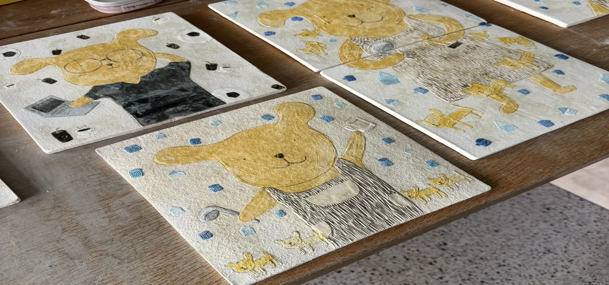
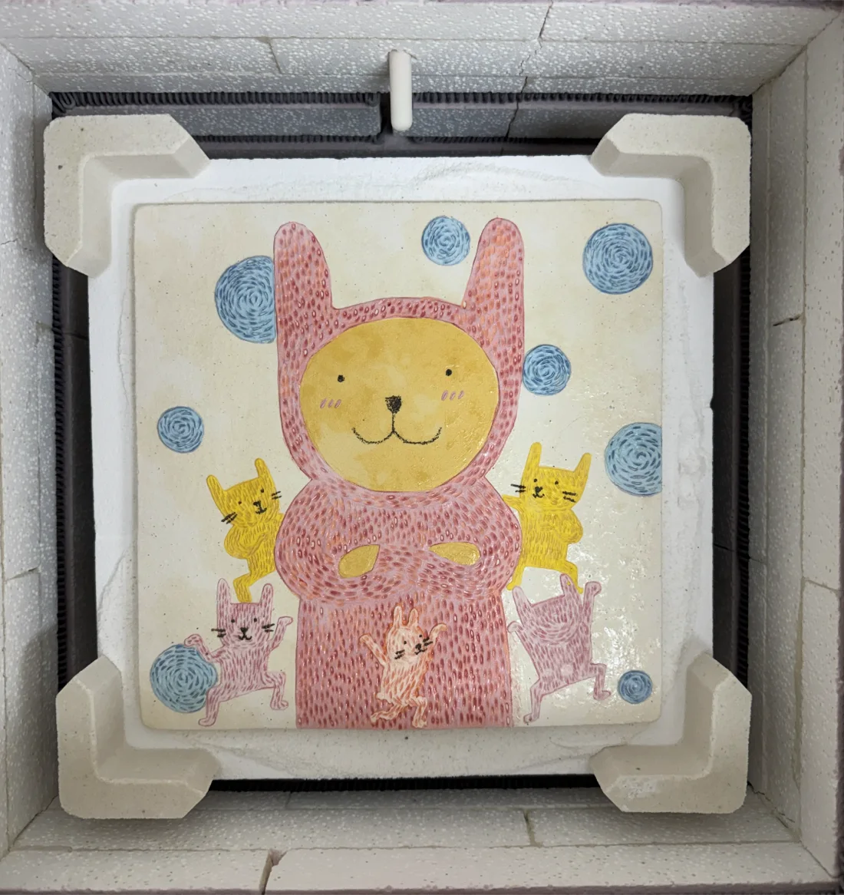
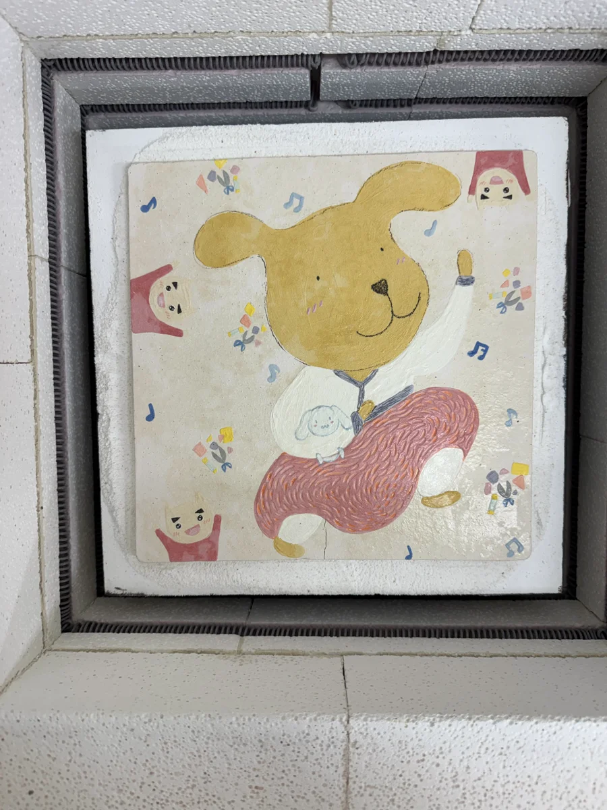
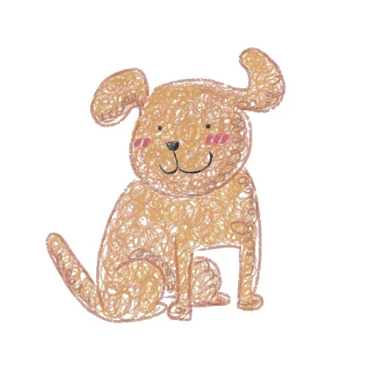
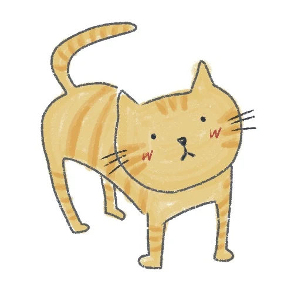
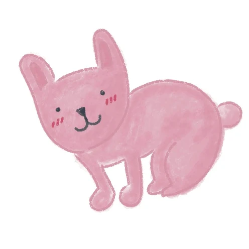
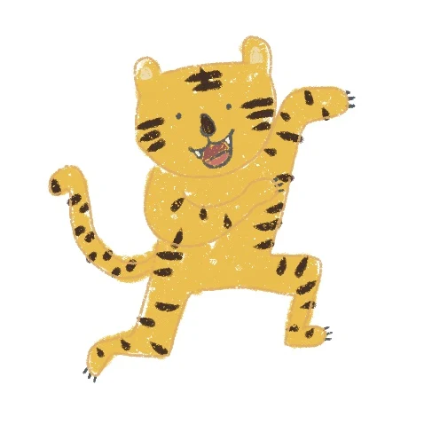
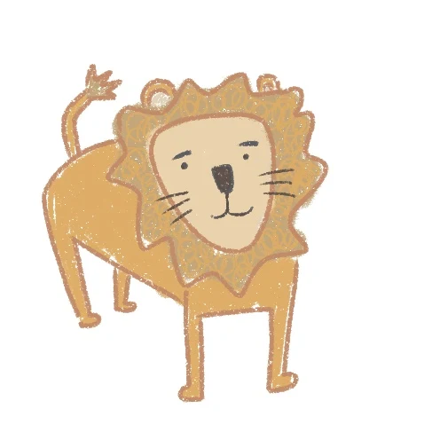

내 친구 누렁이를 소개합니다김누리 도자 전시


움직이는 장면은 작품 사진을 바탕으로 생성형 AI로 만든 영상이에요.

02 / 나의 소개
나를 닮은,
우리를 담은.
누렁이에게는
작가 김누리의 모습이 담겨 있어요.
나를 소개한다는 건, 내 곁의 사람들을 함께 소개하는 일이기도 하죠. 누렁이의 모습에 담긴 나의 이야기에서, 우리 가족의 이야기로 이어집니다.
우리 가족도 만나볼래?


닮은 듯,
다른 우리.


뾰로~롱!얼굴을 보고, 표정을 보고.
작품 속에 담긴 사람들의 이야기를 만나보세요.
03 / 내가 좋아하는 것들
좋아하는 게
이렇게나 많아!
마음이 가는 색, 함께하고 싶은 동물,
나를 즐겁게 하는 취미.
작품 사이에서 너와 닮은 취향도 찾아봐.


너는
뭘 좋아해?
뭘 좋아해?





포토카드를 만드시겠습니까?(사진은 5장까지 선택 가능합니다.)
＋를 눌러 좋아하는 것을 추가(총5개)해 보세요!
고른 사진은 이 기기 밖으로 나가지 않아요.
04 / 전시와 체험 안내
이제,
너의 이야기를 들려줘.
누렁이를 만났다면, 이번엔 너를 소개할 차례.
너를 닮은 스티커를 골라 오늘의 만남을 가져가.
전시장에서 함께해요나를 소개하는 작은 조각들
- 01
캐릭터
나를 닮은 친구
- 02
색깔
마음이 가는 색
- 03
좋아하는 동물
함께하고 싶은 동물
- 04
좋아하는 취미
나만의 즐거운 시간
- 살펴보고전시장에 준비된
스티커를 둘러봐요. - 나를 골라보고캐릭터·색깔·동물·취미 중
마음에 드는 걸 골라요. - 함께 가져가요고른 스티커를 가져가며
나의 이야기도 떠올려봐요.
위 그림은 스티커 종류를 안내하는 이미지예요. 실제 스티커는 전시장에서 만나보세요.
어떤 전시인가요?
「내 친구 누렁이를 소개합니다」는 작가 자신을 투영한 누렁이를 통해 나와 가족, 좋아하는 것들을 소개하는 도자 전시입니다. 누렁이의 이야기를 따라가며 여러분 자신의 모습도 발견해 보세요.
포스터 자세히 보기- 전시 기간
- 2026. 10. 13 (화)
— 10. 28 (수) - 전시 장소
- 세종시립도서관 B1
- 작가
- 김누리 · 누리마당
우리, 전시장에서 만나.
↑